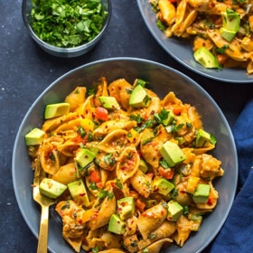

← All recipes
Instant Pot Chicken Fajita Pasta

Servings: Servings: 6 servings · Prep: 15 minutes · Cook: 20 minutes
Ingredients
- 1 tbsp olive oil
- 2 medium-sized chicken breasts, diced into 1 inch pieces
- 1 tbsp taco seasoning
- 4 cloves garlic minced
- 1 yellow onion, diced
- 2 cups chicken broth
- 2 cups fresh salsa (I use the Jack’s Fresh brand, or canned diced tomatoes will work)
- 1 lb medium pasta shells or macaroni, penne or rotini
- 1 each red, green and yellow pepper, finely diced
- 1 cup cheddar cheese, grated
- 1/2 cup sour cream
- 1/3 cup chopped fresh cilantro
- 1 avocado, diced
Directions
- Add olive oil, chicken, taco seasoning, garlic, onion, chicken broth, salsa and shells to the Instant Pot in that order, making sure to leave the shells sitting on the top of all the other ingredients.
- Cook on high pressure for 3 minutes, then do a quick release of the pressure. Instant Pot will take about 10-15 minutes to preheat, then pressure cook for 3 minutes.
- Remove lid when safe to do so and stir in bell peppers, sour cream and cheddar cheese, stirring well. Replace lid and let sit for five minutes.
- Remove lid again and stir in cilantro, then serve among 6 bowls, topping with avocado. Serve and enjoy!
Original source: thegirlonbloor.com